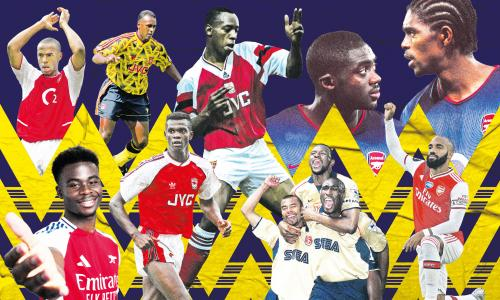

Black Players

Arsenal were one of the first English clubs to regularly feature Black players in its lineup. Players like Ian Wright, David Rocastle, and club Captain Patrick Vieira are some of the club's most legendary players who faced years of adversity from other clubs in other countries, but were able to find a home with Arsenal FC.
I've spoken with many longtime Black British Arsenal fans, and they are proud to point out how good it made them feel to see that they were represented as fans to see people that looked like them on the field succeeding.
The following is a video interview of the first Black player to play for Arsenal, and how he feels about such a significant event in football.